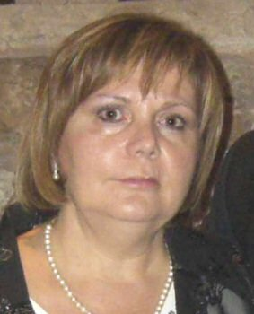

Estrella García Simarro
Estrella García Simarro 

 Haz clic aquí para detalles de la Familia de Estrella con Diego López Alarcón
Haz clic aquí para detalles de la Familia de Estrella con Diego López Alarcón
This page is within a frameset. View the entire genealogy report of García Simarro families, or surname index of García Simarro pedigrees or report summary of García Simarro heritage from "Árbol Genealógico de Manolo y Amalia".
Genogram Rules.
© 2006 GenoPro Inc. All Rights Reserved.